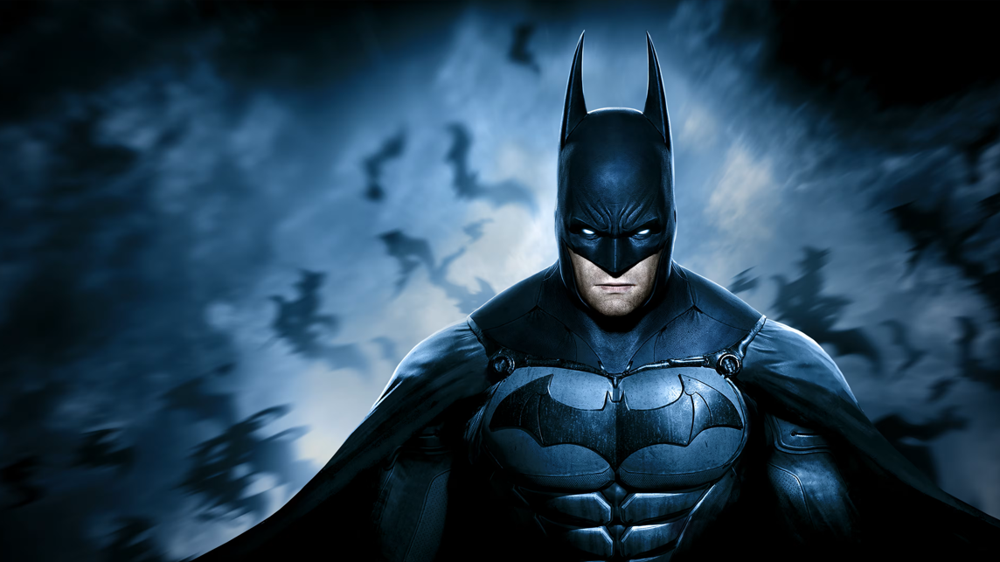
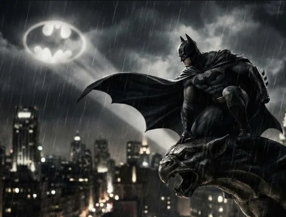
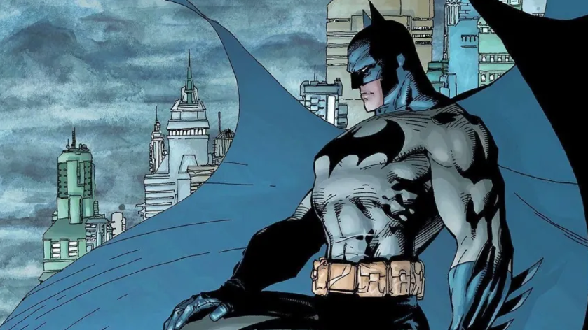

Batman o Heroi de Gotham
O maior dos morcegos
Terror dos inimigos



O maior dos morcegos
Terror dos inimigos
Data: 25/02/2026
Na madrugada desta quarta-feira, Batman conseguiu impedir um grande plano de roubo ao banco central de Gotham.
Segundo relatos de testemunhas, o herói apareceu no topo de um prédio ao lado do banco e surpreendeu os criminosos antes que eles pudessem agir.
Data: 24/02/2026
Na noite de terça, uma explosão ocorreu em um antigo armazém no porto, mobilizando equipes de emergência.
Testemunhas que voltavam de uma festa disseram ter visto o Batman entrando no prédio pouco antes de uma segunda explosão, desta vez controlada.
Data: 20/02/2026
Nesta sexta-feira, o amado Batman visitou crianças em estado de câncer terminal no hospital infantil de Gotham, ele surpreendeu todas as crianças que não estavam esperando tal visita junto a balões, ursos de pelúcia e chocolates.
Leia mais...Data: 18/02/2026
Moradores de Gotham informam ter visto a Mulher-Gato junto ao Batman esta noite. Segundo testemunhas, os dois foram avistados nos telhados do centro da cidade, enquanto perseguiam fugitivos que haviam roubado uma joalheria.
Leia mais...